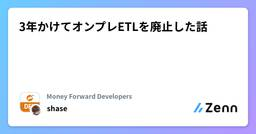
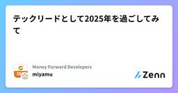

Money Forward Developersのフィード
https://zenn.dev/p/moneyforward
株式会社マネーフォワード公式開発者向けアカウントです。 技術記事やイベント、登壇など技術関連のことを発信します。
フィード
SQLだけでナイーブベイズ分類モデルを実装する ― スパムメール分類を例に
Money Forward Developersのフィード
SQL でデータ分析をしていると、機械学習や統計モデルを作りたいけど R や Python 立ち上げるのは面倒臭い！ってことがよくあると思います。そんな時は、そのまま SQL でモデル実装してしまえばいいのです！（※そこまで複雑でないアルゴリズムに限る）ということで、この記事ではスパムメール（迷惑メール）検知などでよく使われるナイーブベイズ分類モデルを SQL だけで実装する方法を紹介します。 ナイーブベイズとは？まずはナイーブベイズがどのようなものかを解説します。ナイーブベイズというとなんか難しそうに聞こえるかもしれませんが、基本的な原理は実はとてもシンプルです。以...
9時間前
シフトレフトは施策ではない --- 品質の作り込みは最初から始まっている
Money Forward Developersのフィード
1. はじめに!シフトレフトという言葉に感じていた違和感ここ数年、「シフトレフト」という言葉を耳にする機会が増えました。テスト、QA、セキュリティ、運用――何かにつけて「シフトレフトしよう」という言葉が使われます。一方で、正直なところずっと違和感もありました。話を聞いていると、人によって指しているものが違います。テストを早く書くことを指す人もいれば、QAを設計段階から巻き込むことだと言う人もいる。レビュー工程を前倒しすることだ、という説明を聞いたこともあります。どれも間違ってはいないと思うのですが、どれもしっくりこなかったです。なぜなら自分自身は、ウォータ...
1日前
1ポチ! 勉強時間記録の物理ボタンを作ってみた [Toggl Track]
Money Forward Developersのフィード
勉強時間や仕事時間の記録をしたい。だけどスマホを出してタップするのすらめんどくさい何回も止め忘れるうちに、結局挫折してしまったという経験はありませんか？私は前世からずっとです。今回は SORACOM LTE-M Button Plus を使って、どこでもただ物理ボタンを押すだけで勉強や仕事の時間を記録開始したり、ストップできる工作をしてみました。このボタンに1クリックで勉強の記録を開始、2クリックで仕事の記録を開始、長押しで記録の停止をどこでも行えます。初期費用としてこのボタンの購入に8,000円ほどかかっていますが、ランニングコストはほとんどない計算です。楽しみなが...
3日前

3年かけてオンプレETLを廃止した話 1
1
Money Forward Developersのフィード
この記事は、Money Forward Engineer Advent Calendar 2025 12月8日の投稿です はじめにこの記事では、オンプレミス上の ETL 基盤 Digdag/Embulkシステム（Digdag + Embulk） を、約 3 年かけて廃止した話を書きます。開始：2022 年夏ごろ最後のサーバ停止：2025年6月ごろ並行タスクも多かったので、ゆるやかに続いた長期プロジェクトでした。 当時のシステム構成と Digdag/Embulkシステム の役割ざっくりした構成はこんな感じでした。各プロダクトの DB（MySQL など）オンプレ環...
6日前

テックリードとして2025年を過ごしてみて 1
Money Forward Developersのフィード
!これは株式会社マネーフォワード福岡開発拠点が主催している Money Forward Fukuoka Advent Calendar 2025 の 8日目の記事です。 テックリードになって1年経った私はマネーフォワードのクラウド経費というプロダクトのテックリードをしています。去年の末ごろに就任し、1年経ちました。せっかく福岡拠点のアドベントカレンダーを書く機会が巡ってきたので、これを機に振り返りをしてみようと思います。 テックリードって何さ？所属部署においてテックリードという職種は、役職ではなく役割として存在しています。そして私が就任した時は明確に役割として規定されて...
6日前

JestからVitestへ移行するのためのエージェントを作って見えたこれからの AI エージェント開発の勘所
Money Forward Developersのフィード
!この記事は、Money Forward Engineers Advent Calendar 2025の 12 月 5 日の記事です。 はじめに弊社ではフロントエンドのテスティングツールの社内の標準を Vitest と定めており、標準化チームより Jest to Vitest Migration Guide が公開されました。そこでは公式のマイグレーションドキュメントをベースに、Jest から Vitest に効率的に移行するための方針などが書かれています。私はこういった「複数のプロジェクトで実行される似通ってはいるが複雑なプロセス」こそ AI の出番だと思い、自身の勉...
9日前
Spring Boot 4 の新機能と注意点 - Kotlin 編
Money Forward Developersのフィード
!この記事は、Money Forward Engineers Advent Calendar 2025 12月3日の投稿ですSpring Boot 4 と Spring Framework 7 が2025年11月にリリースされました。https://github.com/spring-projects/spring-boot/wiki/Spring-Boot-4.0-Release-Noteshttps://blog.jetbrains.com/idea/2025/11/spring-boot-4/すでにいろいろな場所で、新しい機能や変更点は紹介されていると思うのですが、多く...
10日前
Go 1.26 Draft Release Noteからimage/jpegを読み解く
Money Forward Developersのフィード
本記事はMoney Forward Kansai Advent Calendar 2025 12月02日の記事です。前回の記事はT45Kさんの「Koogで始めるA2Aプロトコル」でした。 突然ですが来週10日が誕生日です来週12月10日でめでたく（？）40歳の節目を迎えることになる@luccafortです。現代社会の人生がおよそ80年ほどであることを考えるとようやく折り返し地点というべきか、もう折り返し地点というべきか悩み始めています。当初10日に公開予定でしたが、急遽02日分として投稿をしています。少しでもこの記事がよいと感じたら「バッジを贈る」から皆さんの支援をお願いし...
12日前
【200記事達成】 ブログという万能調味料を知ってほしい。素材の良さが引き立つ。
Money Forward Developersのフィード
最初にみなさんブログを書いていますか？私は30歳から本格的に始めた（主に）技術ブログが200本目を迎えました。Zennの投稿で（この記事を含めて）96本。前職の会社ブログで104本執筆しています。私がこれまでブログを書いてきたのは、 ブログがどんなアウトプットに合わせても相性抜群。双方の良さを引き出しているから。 なのですが、ご存知ない方もいらっしゃるかもしれないので、今回記事を書いてみました。 私のキャリアの変遷から見るブログの変化以下のように、私のキャリアの変遷とともにブログの内容も変化してきました。ただし、どんな内容にせよ実は「私はこういうことがしたいです。...
13日前
東京出身者が福岡に来て車を買ってみた話
Money Forward Developersのフィード
こんにちは。マネーフォワードのbigbackboomです。こちらは、Money Forward Fukuoka Advent Calendar 2025 の1日目の投稿です。早いもので縁もゆかりもない福岡に移住してから、2年と半年がたちました。今回は一念発起して、車を買った話をしようと思います。 福岡での生活と車の必要性ご存知の方も多いとおり、福岡はコンパクトシティを掲げて街がぎゅっと小さく中心にまとまっています。その上で、空港も街から近いので、福岡市内では15分ほどの電車移動で生活に必要な場所に大体移動できます。生活に困らないのであれば、車なんて買う必要はないのではないかと思...
13日前
英語がもう苦手ではなくなったエンジニアが一つ殻を破るためにやった学習
Money Forward Developersのフィード
さっそくまとめ私の職場では特にエンジニア組織のグローバル化が進んでいます私はそんな中、英語がほぼ話せない状態（CEFRレベル：A2）から入社し、1.5年間社会人として頑張れる範囲で英語学習を続けてきました初期は平日でも4時間程度の学習時間を確保していました現在は机に向かうのは1時間程度で、あとは通勤時間や隙間時間を利用して学習していますスピーキングにおいて、中上級者（CEFR:B2）とされるレベルに入るための最後のピースであったと感じている勉強法は主に2つですリスニング: ほぼ100% 1.5倍速までやるシャドーイングスピーキング: 結局瞬間英作文...
18日前
Jestの2つのカバレッジ収集方法をざっくり調べてみました
Money Forward Developersのフィード
こんにちは。bun913と申します。私のチームでは、Sonarqubeというツールでカバレッジレポートを管理しているのですが、ReactコンポーネントやHooksの一部で「テストは書いているはずなのに、出力されたカバレッジレポートではテストが不足している」という問題が発生しました。後述しますが、解決方法としては以下のように Jest の coverageProvider オプションを v8 に変更することで、同時にパフォーマンスも向上したように思います。ただし、Jest のドキュメントには私が見る限り、これらのプロバイダーの違いについての詳細な説明がありませんでした。そこで私が今知...
19日前
日本人にも国外からの参加者にもうまい Tokyo Test Fest というイベントに参加してきました #TokyoTestFest2025
Money Forward Developersのフィード
こんにちは。bun913と申します。みなさんは Tokyo Test Festというイベントをご存知でしょうか？テスト関連のイベントといえば、JaSSTというシンポジウムが有名ですが、 Tokyo Test Fest は昨年度から始まった年に1回の大規模なテストカンファレンスです。こちらは同時通訳がついており、日本語・英語の両方で楽しめるのですが、私は昨年参加した際に「来年は絶対に英語で聞けるようにするぞ」という目標を密かに立てていました。結論から言えば英語でほとんどの講演を聞くことができたのですが、内容も AI・アクセシビリティ・自動運転周りのテスト自動化の実践など多岐に渡り、...
1ヶ月前
MySQLのメタデータロック機構を理解する
Money Forward Developersのフィード
はじめにこんにちは、M-Yamashitaです。今回の記事では、MySQLのメタデータロック機構を理解する記事となります。ridgepoleを使ったマイグレーション実行時に、別クエリにてメタデータロックを取得していた時の挙動を調べることがあり、そもそもメタデータやメタデータロックとはなんなのかを深掘りしたいと思いました。そのため私の知識の整理も兼ねて、この記事で共有します。 この記事で伝えたいことメタデータやメタデータロックの概要メタデータロック取得の仕組み実際にメタデータロックを取得した際のmetadata_locksテーブルの内容について紹介 調査環境...
1ヶ月前
とあるQAチームの手堅いAI・MCP活用 〜何をどうテストするかまでの工程編〜
Money Forward Developersのフィード
こんにちは。とあるQAチームに所属するbun913と申します。私は、普段 SDET(Software Development Engineer in Test)として、テスト自動化や品質向上に取り組んでおり、自動テストの作成だけでなく、手動テストによる品質向上にも力を入れています。私たちのQAチームでは、AIやMCPサーバーと言われる技術を活用して従来のテスト工程を効率化しています。今回は6ヶ月以内に開始して、ある程度形になってきたAI・MCPを活用したテスト工程の改善について、イメージしやすいように実際のリポジトリのディレクトリ構造などを添えてご紹介したいと思います。※ この取り...
1ヶ月前
VisionフレームワークとFoundation Modelフレームワークを活用してAI単語カードアプリを開発した話
Money Forward Developersのフィード
こんにちは。iOSエンジニアのTomo🍎です。最近、Foundation Modelsフレームワークに関する技術記事を執筆する機会がありました。この記事は技術書典で今後公開される予定です。 せっかくなので、技術記事を執筆するだけでなく実際に手を動かしてみようと思い、Foundation Modelsを活用したアプリを開発しリリースしました。本ブログでは、どのような技術スタックを使ってアプリを開発したか、実装の詳細をお話しします。 リリースしたアプリhttps://apps.apple.com/jp/app/ai単語カード-画像から英単語カードを自動に作成できるアプリ/id6754...
1ヶ月前
産休に入るエンジニアです。いろんな気づきと今の気持ち
Money Forward Developersのフィード
はじめにこのたび産休に入ることになりました。これまでの仕事のこと、妊娠中に感じたこと、そして今の気持ちを少し残しておこうと思い、このエントリを書いています✏️同じようにライフイベントを迎える方や、チームの誰かが産休・育休を取る立場になったときに、少しでも参考になれば嬉しいです。 妊娠して初めて知ったこと・感じたこと 🩺妊娠するまで知らなかったことが本当にたくさんありました。体調だけでなく、日常の小さなこと一つひとつに気を遣う日々🤔毎日が新しい発見と調整の連続でした。 初期食べていいもの・避けた方がいいものが分からず、毎回検索して確認カフェイン（コーヒー、...
2ヶ月前
自然言語でテストケースを管理するためにZephyr のMCPサーバーを作ってみた
Money Forward Developersのフィード
こんにちは。ダイの大冒険エンジョイ勢のbun913と申します。最近ではすっかりMCPサーバーが注目を集めていますよね。私も以前TestRailというテストマネジメントツールを自然言語で操作するためのMCPサーバーを作っていました。https://zenn.dev/moneyforward/articles/6c439bab3cb0f4最近では事情があり、ZephyrというJIRAのプラグインとして提供されているテストマネジメントサービス用のデータ移行ツールやAPIクライアントを作成しています。Zephyr(Scale)に関しても、すでにMCPサーバーを自作されている方が見受けら...
2ヶ月前
JaSST'25 Kyushu前夜祭の感想 #jasst_kyushu
Money Forward Developersのフィード
こんにちは。ダイの大冒険エンジョイ勢のbun913と申します。本日JaSST'25 Kyushu前夜祭というイベントにて、私がメールやSlackの通知を起点にした非同期な機能に対する自動テストの基盤を作成したことについて発表しました。内容としては、以下のブログに書いてあることをベースにこれまでの環境やインフラ面での工夫についても触れた形になります。https://zenn.dev/moneyforward/articles/11b02308de20b1 発表の内容私たちのチームでは今実際に稼働しているシステムのAPIを順に実行して、返ってくる値を検証するAPIテストの自動化...
2ヶ月前
英検準1級に合格しました 習慣化の重要性と仕事での英語活用に関する気づき
Money Forward Developersのフィード
こんにちは。ダイの大冒険エンジョイ勢のbun913と申します。マネーフォワードでは以前より、英語化が進んでおり、実際に私の所属するチームにも様々な国籍のメンバーが在籍しています。https://youtu.be/7YI4SJ2796M?si=BnVlvT3Y-U72MJ5q私は、決して周りと比較して英語が得意とは言えない状況から、今後のモチベーションやみなさんの参考になればと思い、これまでもブログ記事を書いてきました。https://zenn.dev/moneyforward/articles/fa986d49e8d99a今回英検準1級に合格することも目標の一つではあったのです...
2ヶ月前